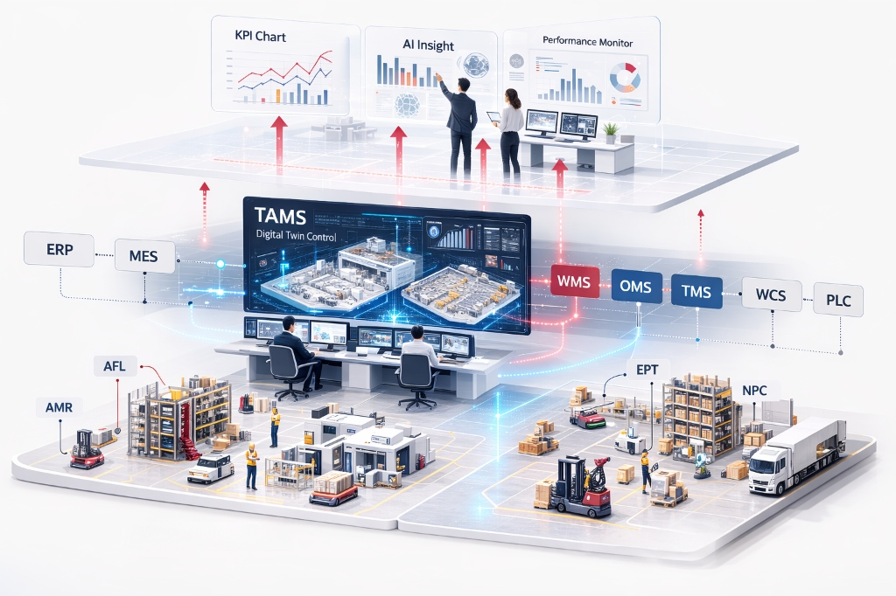

자율을 지휘하다 Autonomy, Orchestrated.
로봇이 움직입니다. Robots move.
관제가 지휘합니다. TAMS orchestrates.
물류SW가 운영합니다
Logistics SW runs the flow.
12개국+
글로벌 현장 적용
0
고객 재구매율
10개 산업군
글로벌 현장 적용
0
물류로봇 매출 연평균 성장률
자율을 실현하다
Autonomy in Action
사람이 반복하던 이송과
적재를 로봇이 대신합니다.
AMR과 AFL이 스스로 경로를 판단하고, 장애물을 피하고, 정확한 위치에 도킹합니다. 공장 라인과 물류센터, 그 어디든 — 현장의 물리적 한계가 바뀌기 시작합니다.
단일 사이트 최대 188대 동시 운영
±5mm 정밀 도킹
현장을 지휘하다
Command the Floor
로봇은 한 대씩
움직일 수는 있습니다.
그러나 수백 대가 엉키지 않고 하나의 흐름으로 움직이려면, 지휘가 필요합니다. 통합관제시스템 TAMS가 다수·이기종 로봇은 물론, 설비와 작업자까지 하나의 흐름으로 조율합니다.
다기종/3000대+ 동시제어
이기종 통합
실시간 재고/경로 최적화
운영을 연결하다
Operations, Connected
주문·재고·운송의 흐름을
하나로 잇습니다.
주문이 접수되고, 재고가 배분되고, 차량이 출발합니다. WMS · OMS · TMS가 현장의 데이터를 운영의 언어로 바꾸고, 전체 물류를 연결합니다.
12년+ 물류 솔루션 구축 경험
제조/유통 현장 다수 적용
Products & Solution
단위 제품부터 통합 솔루션까지
